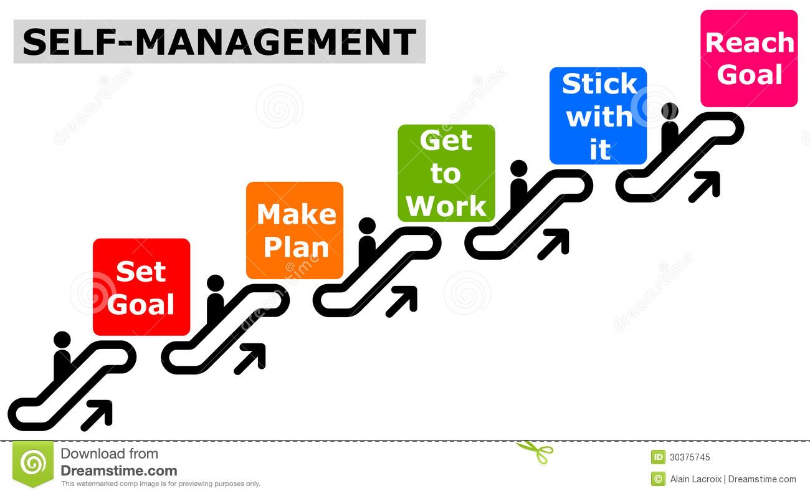
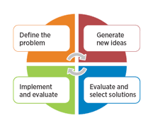

SERVICES WE OFFER
Once you hire one of our tutors we will be helping you with the following service either in Personal or Virtually Tutoring services play a key role in the overall success of any college or university, not just the overall success of the students being tutored. The mission for any tutoring service is to ensure academic excellence for the whole of the student body by providing a place, assistance, group of people, and/or the right resources to encourage pupils to seek help when and where the need it. Tutoring is not a replacement for what can be learned in the classroom or from a professor or teacher. However, it is a strong resource for learning that works closely with and alongside what happens in the classroom and in home study.
SUBJECTS OFFERED BY OUR TUTORs
CORE VALUES
GOAL SETTING
Because everyone is different, figuring out learning goals can help to both offer internal motivation to students and show students the value of learning (because who hasn’t heard the question, “When am I ever going to use this?”). When learning is self-directed, setting goals is even more important because students have to rely more on themselves to ensure they’re learning.
PROJECTS RESEARCH
In such an environment, the online tutor plays an important role.In research is to create the tutoring process in project-based learning environments using his wide range of skills embark on a new teaching method that meets the learners' needs in order to develop their skills. the content of offered tutoring that we characterize at level best to the students.
HOMEWORK

Online homework help will ensure that the students receive guided assistance as and when required. Another crucial reason for hiring tutors online is that the students might lack the confidence to ask questions openly and find it hard to concentrate in group-learning sessions
COMMUNICATION SKILLS
The goal of online communications is the same as the goal in face-to-face communications: to bond; to share information; to be heard, and to be understood. Fostering a sense of community in online classes will make the learning experience more meaningful for online students and help them stay connected during the life of the course.
WRITTING SKILLS
Tutors can help students in learning new writing skills and mastering homework which the have been assigned. As the classroom, the teacher doesn't always have the time to work but makes a follow-up on students ,our tutors have been equiped with some of the skills you'll need as a Online Tutorwhich include Applied Linguistics, Alternative Assessments in Education
SELF MANAGMENT
Teaching students self-management strategies can free teacher time to focus on other essential tasks, which is especially important when working in a classroom environment with children with a variety of learning strengths and needs. Moreover, such strategies can be used to increase students’ opportunities to practice and respond to knowledge and academic skills in the curriculum, as well as support their behavioral needs.
CLASS PROJECTS
Tutors school task requiring considerable effort. school assignment, schoolwork - a school task performed by a student to satisfy the teacher.The purpose of the project is for you to apply concepts covered in class and refine your writing and presentation skills.This is key in helping teacher make a good follow up on the progress of students and how to help them improve skills while collaborating
PROBLEM SOLVING
Problem-solving is what we do when we look at a task and don’t know what to do. This makes strategies very important – they are how we begin. When a child looks at a problem and says, “I don’t know,” our role as a teacher is to help them persevere – to stick with it and find a solution. Strategies are the tools we use to get started when there is no obvious solution path.
E-BOOKS
Teachers find it convenient to explain and demonstrate concepts with the help of visual aids that eBooks offer, such as videos and graphic illustrations. It becomes easier for a teacher to explain concepts after the student has gone through an entire video.Ebooks are also assisting teachers and students since they can be accessed anywhere and at all time and easy to carry from one place to another